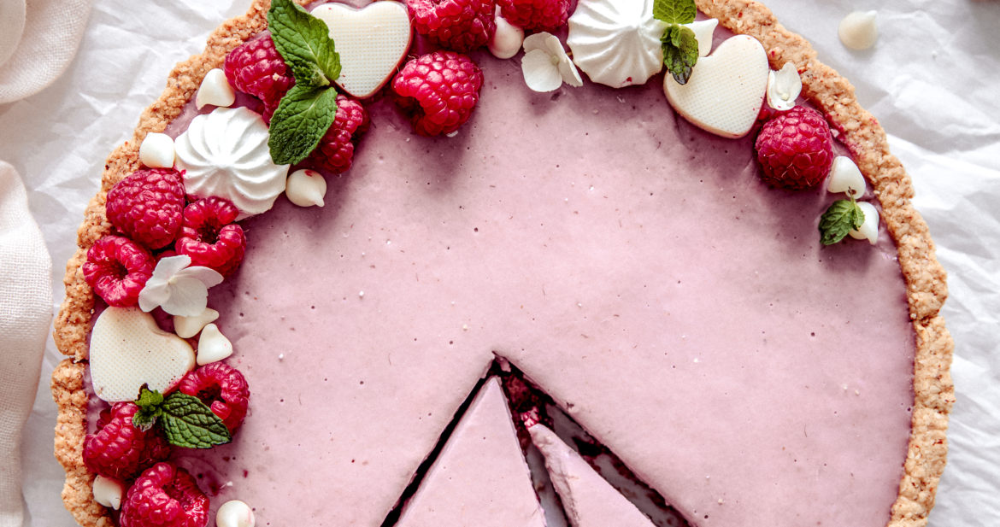
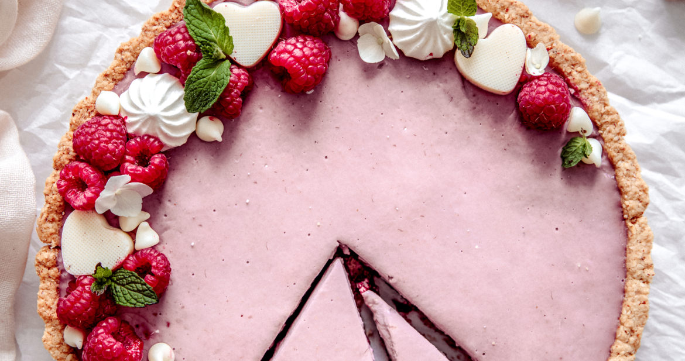

Try these hand picked recipes for this year's Cruelty-Free-Christmas!
This main course will have people talking for days! Begin this prep the night before to save time.
Easy to whipe together alongside the main course, you can't go wrong with this hearty classic.
And of course, the real main course, this dessert is the prefect refreshing and sweet ending to top off your meal.